Animacion Pastoral
Baile
Animacion Pastoral siempre ha tratado de animar a la poblacion de CEDES Don Bosco
Promovió la Asociación de Exalumnos Salesianos, el desarrollo de un moderno sistema pedagógico conocido como Sistema preventivo para la formación de los niños y jóvenes y promovió la construcción de obras educativas al servicio de la juventud más necesitada, especialmente en Europa y América Latina.
Su prestigio como sacerdote y como educador de los jóvenes necesitados o en riesgo,
le valió el respeto de las autoridades civiles y religiosas de su tiempo y de su
país, así como una notable fama en el extranjero. Sus obras fueron requeridas
directamente por jefes de estado y autoridades eclesiásticas de países como Ecuador,
El Salvador, entre muchos otros.
Perfiles
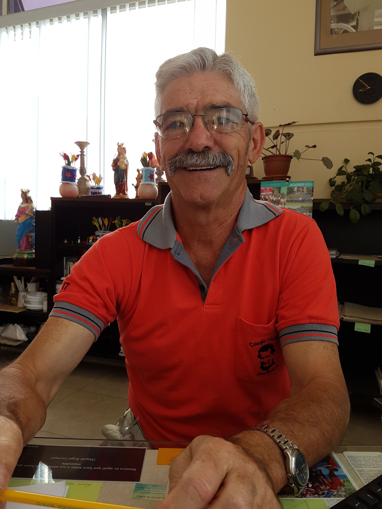
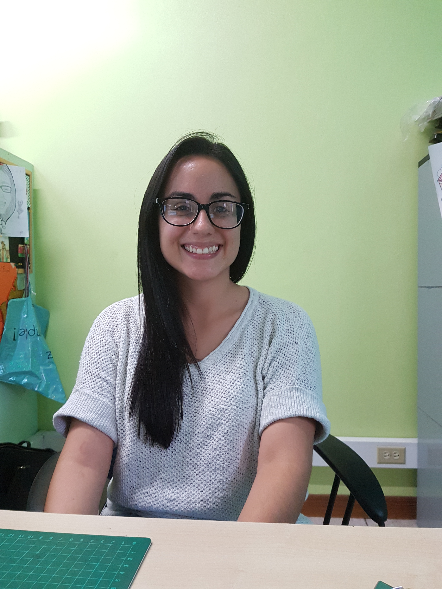
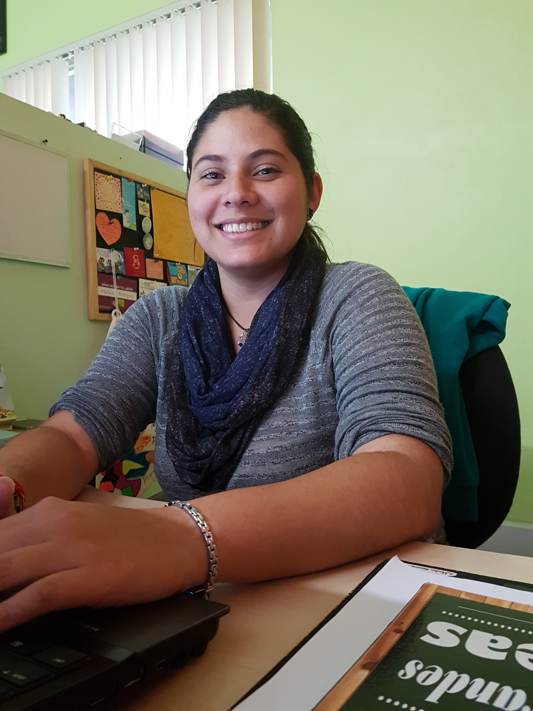
 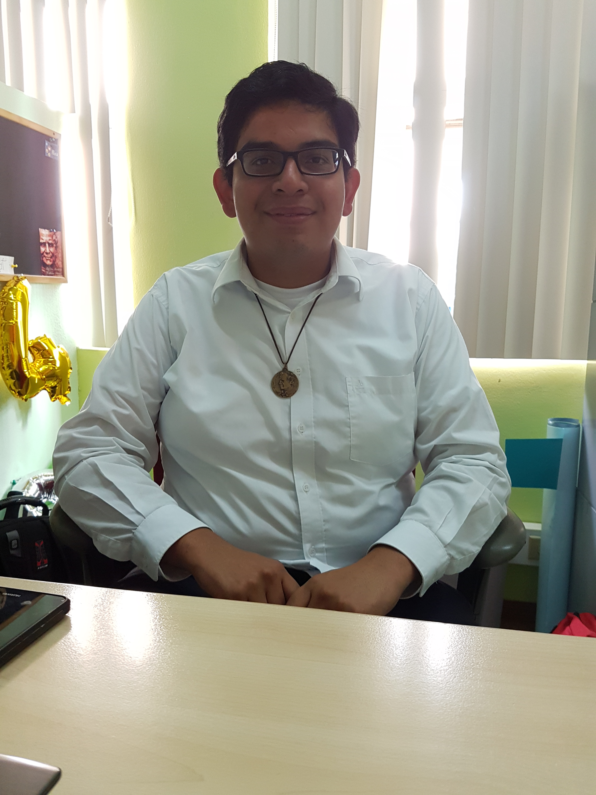
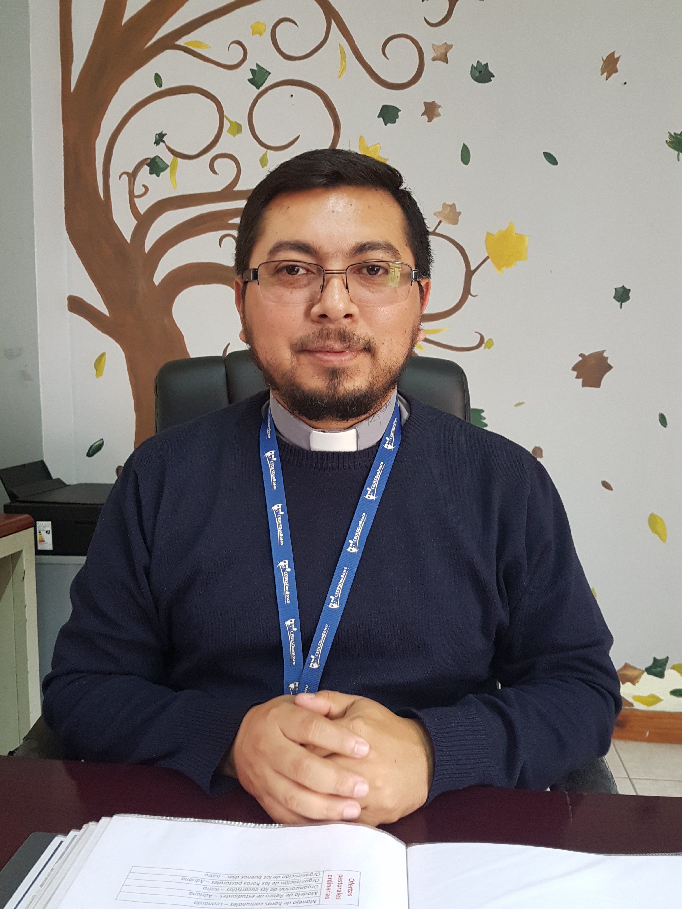
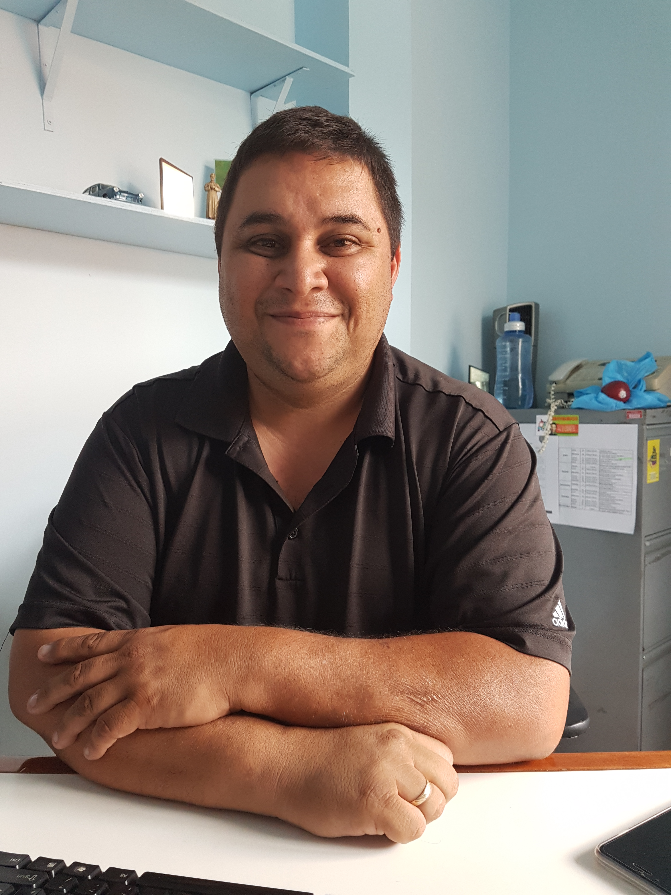
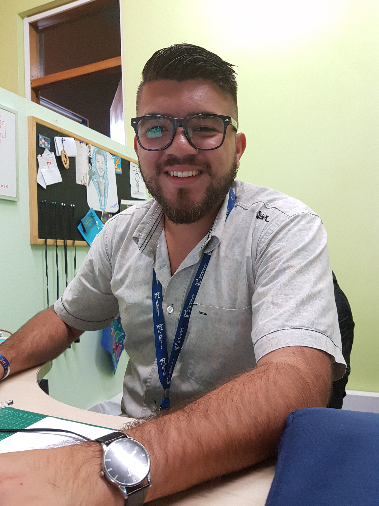
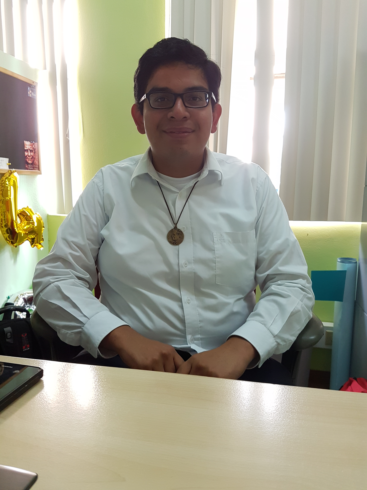
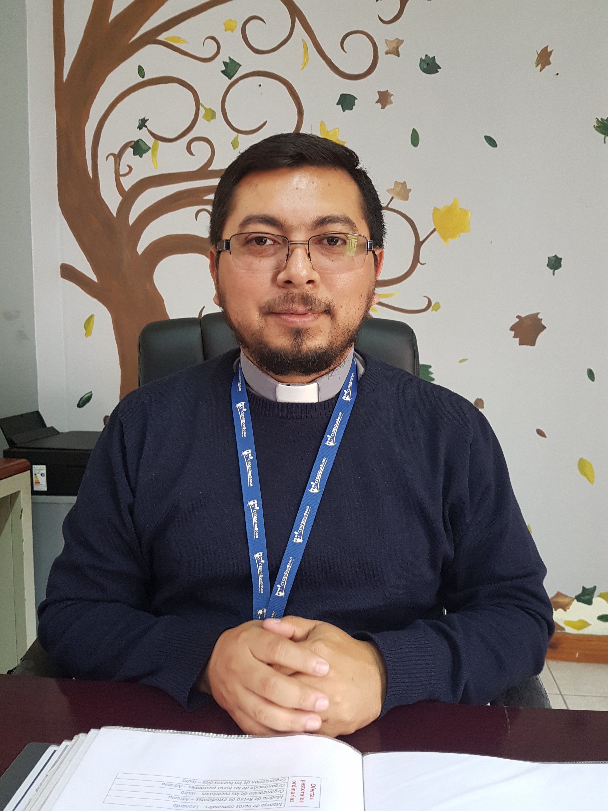
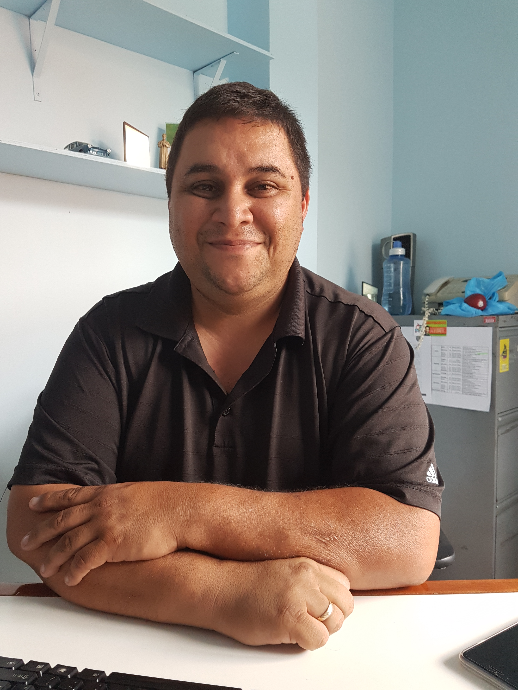
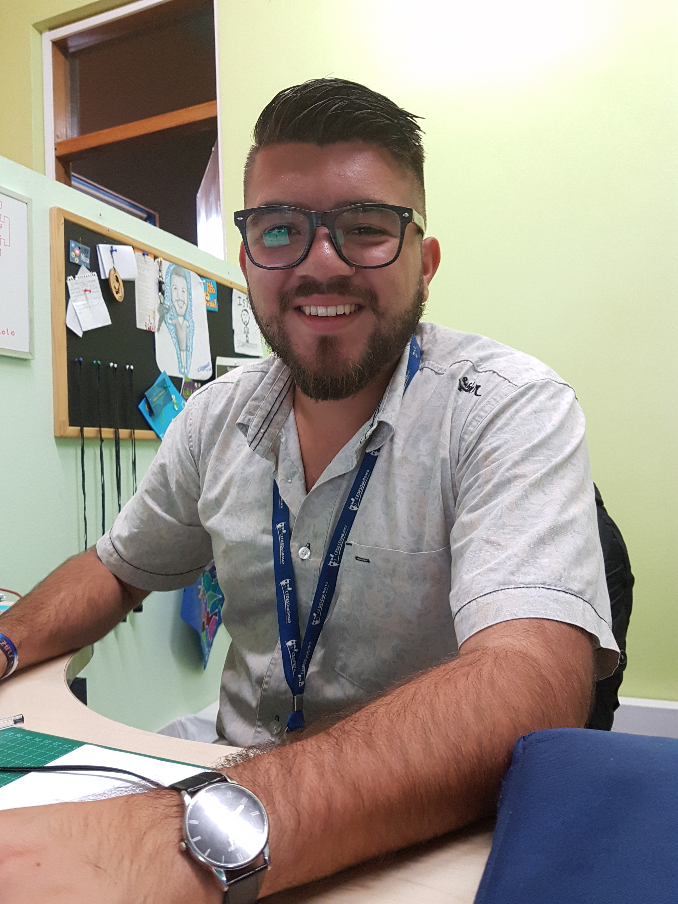